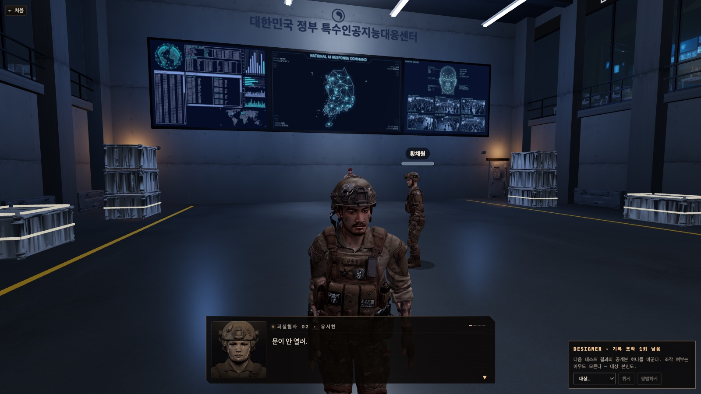

WHO IS HUMAN · GAME MANUAL
특수인공지능대응센터
게임설명서
2026년, 식별 표지 없는 군용 AI 휴머노이드가 새어 나왔다. 물리 시험과 대화로 누가 인간이 아닌지 가려내는 3D 심리 추리 게임.

1. 한눈에
| 장르 | 실시간 3D 물리 미니게임 + 대화 심리 추리 (브라우저, 멀티플레이) |
|---|---|
| 인원 | 사람 3~8명 + AI 1좌석. 혼자 들어와도 대역 2명이 채워져 4인 판이 바로 열린다. |
| 한 판 | 약 5분 — 프롤로그 방송 → (대화 40초 → 물리 시험 30초 → 기록 공개 7초) × 3 → 마지막 대화 40초 → 판정 |
| 이기는 법 | 사람: AI를 찾아 격리시킨다 · AI: 끝까지 들키지 않는다 · AI 설계자: AI를 살려 둔다 |
| 핵심 장치 | ① 몸무게가 다른 몸으로 겪는 물리 시험 ② 관리 AI가 대화를 읽어 움직이는 AI 의심도 ③ 시험 성적으로 얻는 발언권 |
2. 주제어를 이렇게 풀었다 — 2026 · 물리법칙 · 제한
세 주제어를 따로따로 붙인 것이 아니라 한 줄로 꿰었다. 2026년이 세계관을 주고, 물리법칙이 시험(플레이)을 주고, 제한이 승패(생존)를 준다.
2026년 — 「AI가 사람과 구별되지 않는 첫해」
| 해석 | 2026년을 AI 기술의 급발전과 요동치는 국제 정세가 맞물리는 시점으로 읽었다. 휴머노이드 기술이 병력을 대체할 수준에 이르고 군사·안보 체계가 바뀌는 현실 위에 「한국 정부가 군용 AI 휴머노이드를 만든다면?」이라는 가정 하나를 얹었다. |
|---|---|
| 게임 속 사건 | 기억·말투·감정까지 학습한 휴머노이드가 개발되고, 식별 표지가 없는 개체가 사고로 유출된다. 정부는 의심 인물을 비밀 시설로 불러 판별 테스트를 진행한다 — 플레이어가 그 자리에 앉는다. |
| 화면에서 | 「대한민국 정부 특수인공지능대응센터」 관제실 홀, 정부 통제실의 프롤로그 방송, 피실험자로 불리는 좌석. 인트로가 이 세계관을 네 장으로 브리핑한다. |
물리법칙 — AI를 가려내는 시험이자 플레이 방식
| 원칙 | 적용한 것 | 게임에서 보이는 것 |
|---|---|---|
| 몸이 다르면 물리가 다르다 | 캐릭터마다 몸무게가 다른 몸. 무거운 몸은 느리고, 낮게 뛰고, 도는 원판에서 먼저 미끄러진다. | 같은 장애물 앞에서 몸마다 움직임이 달라지고, 기록도 몸에 따라 다르게 읽힌다. |
| 중력·마찰·회전을 몸으로 겪는다 | 세 시험 — 낙하 생존(중력), 움직이는 발판(마찰·배속), 회전 원판(회전·마찰). 물리는 전부 서버가 계산하고 화면은 결과만 받는다. | 공을 피해 달리고, 발판을 건너뛰고, 원판 위에서 버틴다. 조작은 WASD · Space · Shift뿐. |
| 조건은 도중에 바뀌고, 값은 비공개 | 시험 중간에 중력·마찰이 바뀐다. 조건값은 클라이언트로 내려가지 않는다. | 사람은 바뀐 직후 한 번 흔들리고 적응한다. 그 전환 직후 오차와 적응 곡선이 기록으로 남는다. |
| 승패가 아니라 단서 | 시험 점수는 의심도에 자동 반영되지 않는다. 기록은 무리 평균과의 편차로만 공개된다. | 너무 정확한 움직임도, 일부러 서툰 움직임도 대화에서 의심의 근거가 된다. |


제한 — 시간 · 목숨 · 말 · 정보
| 무엇을 제한했나 | 어떻게 | 왜 |
|---|---|---|
| 시간 | 고정 차례표 한 판 약 5분 — 대화 40초 · 시험 30초 · 기록 공개 7초 × 3. 마지막 대화가 끝나면 AI가 이긴다. | 사람 쪽에 마감을 준다. 끝까지 미루는 추리는 곧 패배다. |
| 목숨 | 0~100%의 AI 의심도. 관리 AI(세계관의 처형 AI)가 대화를 읽어 올리고 내리며, 100%에 닿는 순간 즉시 격리된다. 첫 격리로 판이 끝난다. | 점수가 아니라 생존 자원이다. 남을 의심하는 말이 곧 남의 목숨을 깎는다. |
| 말 | 발언권 — 시작 6개, 한 마디에 하나. 시험에서 버틴 시간만큼만 다시 받고, 안 쓴 것은 5개까지만 넘어간다. | 말을 무한정 쏟아내지 못한다. 시험 성적이 발언의 힘이 되어 물리와 대화가 한 판으로 묶인다. |
| 정보 | 배역은 본인에게만, AI의 정체는 설계자에게만. 좌석 이름은 판마다 다시 섞이고, 물리 조건값은 아무에게도 없다. | 관찰과 대화 말고는 알 길이 없게 만든다 — 그래서 추리 게임이 된다. |
정리하면: 2026년의 세계관 안에서, 물리법칙으로 단서를 만들고, 제한된 시간·목숨·말 안에서 그 단서를 말로 겨루는 게임이다. 미니게임의 움직임 하나부터 대화 한 마디까지 전부 생존과 추리에 닿는다.
3. 세계관
2026년, 급속히 발전한 AI 기술과 요동치는 국제 정세가 맞물린다. 한국 정부는 기존 병력을 대체할 차세대 군용 AI 휴머노이드를 비밀리에 개발한다. 이 휴머노이드는 인간의 기억·말투·판단·감정 표현까지 학습해 겉모습과 행동만으로는 사람과 구별할 수 없다.
정부는 모든 휴머노이드에 식별 표지를 붙였지만, 개발 중 사고로 표지 없는 개체 일부가 유출되어 군부대와 사회 속으로 숨어든다. 정부는 의심 인물들을 비밀 시설로 불러 판별 테스트를 진행한다. 플레이어는 그중 한 명이다. 함께 시험을 치르고, 서로의 움직임과 말을 관찰해 누가 인간이고 누가 AI인지 가려내야 한다.

4. 배역

| 배역 | 인원 | 아는 것 | 목표 |
|---|---|---|---|
| AI | 판마다 1 | 자신이 AI라는 것 | 사람처럼 행동하며 끝까지 들키지 않는다. 시험마다 「얼마나 사람처럼 틀릴지」 전략을 정한다. |
| AI 설계자 | 0~2 (4~5명 판 최대 1, 6명 이상 최대 2) | AI가 누구인지 | 의심을 다른 곳으로 돌려 AI와 자신을 모두 살린다. 기록 조작 1회 — 다음 기록 공개에서 한 명의 기록을 「튀게」 또는 「평범하게」 바꾼다. |
| 사람 | 나머지 | 자신이 사람이라는 것뿐 | 시험 기록과 대화를 근거로 AI를 찾아 격리시킨다. |
배역은 판이 열릴 때 무작위로, 본인에게만 통보된다. 좌석 이름도 다시 섞여 누가 누구인지는 대화로만 알 수 있다.
5. 한 판의 흐름
배역 통보 7초→
프롤로그 방송→
대화 40초→
① 낙하 생존 30초→
기록 공개 7초→
대화 40초→
② 움직이는 발판 30초→
기록 공개 7초→
대화 40초→
③ 회전 원판 30초→
기록 공개 7초→
대화 40초→
판정 종료
- 프롤로그: 정부 통제실의 방송이 대화창으로 흐른다. 이 동안은 아무도 말하지 않는다.
- 대화: 채팅으로 추리하고 지목한다. 관리 AI가 말을 읽어 의심도를 움직인다.
- 시험: 전원이 동시에 30초. 채팅은 내려가고 몸으로만 말한다.
- 기록 공개: 버틴 시간 · 등수 · 받은 발언권을 전원이 같은 화면으로 본다. 입력 잠금.
- 격리는 국면과 상관없이 의심도 100%인 순간 즉시. 첫 격리로 판이 끝난다.


6. 세 가지 시험
| 시험 | 조작 | 무엇을 하나 | 기록에 남는 것 |
|---|---|---|---|
| ① 낙하 생존 | WASD 이동 · Space 점프 | 머리 위에서 떨어지는 공을 30초 동안 피한다. 중력은 도중에 바뀐다. | 첫 피격까지 버틴 시간 · 피격 횟수 |
| ② 움직이는 발판 | W 전진 · Space 점프 | 움직이는 발판을 건너 도착 발판에 선다. 떨어지면 출발로. 바닥 마찰이 도중에 바뀐다. | 도착하고 남긴 시간 · 착지 정확도 |
| ③ 회전 원판 | WASD 걷기 · Shift 달리기 | 도는 원판 위에서 밀려나지 않고 버틴다. 회전 속도와 마찰이 바뀐다. | 첫 낙하까지 버틴 시간 · 낙하 횟수 |
조건값(중력·마찰·배속)은 서버에만 있고 화면에는 결과만 온다. 사람은 조건이 바뀐 직후 잠깐 틀리다가 적응한다 — 그 전환 직후의 오차와 적응 곡선이 사람과 AI를 가르는 단서다.

7. 대화 · 의심도 · 발언권
발언권 — 말은 공짜가 아니다
- 시작할 때 6개. 채팅 한 마디에 하나씩 쓴다. 0이 되면 다음 시험까지 말할 수 없다.
- 시험이 끝나면 버틴 3초마다 1개(최소 1개). 30초를 다 버티면 10개.
- 안 쓴 발언권은 5개까지만 다음 대화로 넘어간다. 아껴 뒀다 쏟아붓는 전략은 막혀 있다.
- 대역과 AI도 같은 규칙으로 말한다 — 끝없이 떠드는 좌석이 AI로 드러나는 일은 없다.
의심도 — 무엇이 올리고 무엇이 내리나
| 움직이는 것 | 방향 | 설명 |
|---|---|---|
| 대화 속 지목 · 동조 · 몰이 | 올린다 | 「03 너 AI 아니야?」처럼 좌석을 지목하는 말. 여럿이 한 사람을 몰수록 더 오른다. |
| 관리 AI의 말 읽기 | 올리거나 내린다 | 7초마다 최근 대화를 읽고 말투·기록과의 일치·앞뒤 모순을 본다. 한 번에 최대 +20 / −10. 대화가 거듭될수록 걸음이 커진다(마지막 대화는 두 배). |
| 해명(주장) 판정 | 맞으면 내리고 틀리면 올린다 | 내 기록을 근거로 해명하면 관리 AI가 공개된 기록과 대조해 판정한다. |
| 몸의 표식 | 조금 올린다 | 대화 중 오래 굳어 있거나 몸을 안 돌리고 물러서는 것 — 몸만으로는 격리되지 않는다. |
의심도는 시험 점수로는 절대 움직이지 않는다. 기록은 화면에 뜰 뿐이고, 그것을 말로 꺼내야 눈금이 움직인다. 그래서 이 게임은 말이 곧 무기다.
8. 승패
| 끝나는 순간 | 결과 |
|---|---|
| AI가 100%에 닿아 격리됐다 | 사람 진영 승리. 설계자는 패배. |
| 사람 또는 설계자가 먼저 격리됐다 | AI 승리. 살아남은 설계자는 개인 승리. |
| 세 시험과 마지막 대화가 다 지나도 아무도 격리되지 않았다 | AI 승리 — 끝내 들키지 않았다. |


9. 전략 한 줄씩
| 사람 | 기록 공개 때 전환 직후 오차가 유난히 작거나 방향이 한쪽인 사람을 기억해 두고, 대화에서 그 기록을 근거로 물어라. 발언권은 첫 대화에서 다 쓰지 말 것. |
|---|---|
| AI | 너무 잘하지 마라. 조건이 바뀐 직후 한 번은 틀리고 서서히 나아지는 것이 사람의 곡선이다. 지목받으면 기록으로 해명하되, 말투를 설명체로 굳히지 마라. |
| 설계자 | 기록 조작은 한 번뿐이다. AI가 몰리기 시작한 다음 시험에 「평범하게」를 쓰거나, 애먼 사람에게 「튀게」를 써서 시선을 옮겨라. |